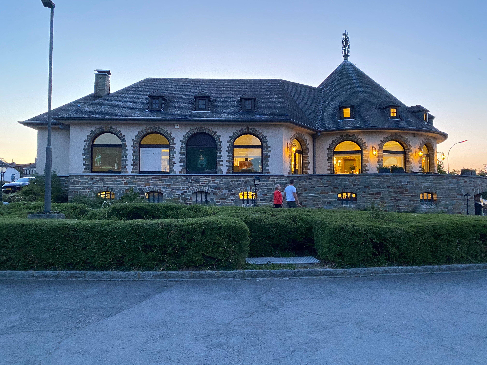
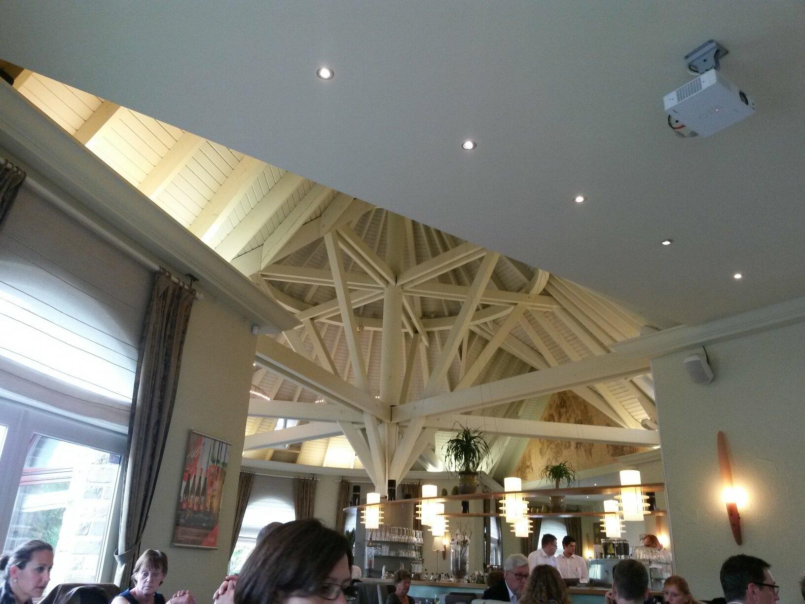
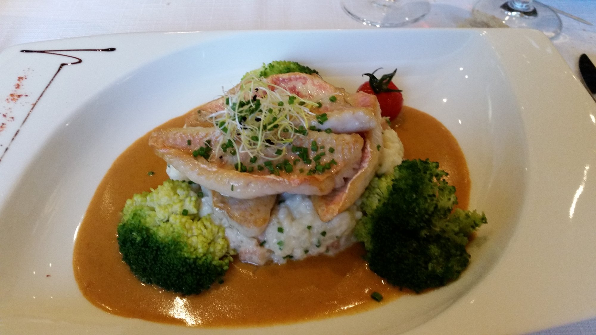
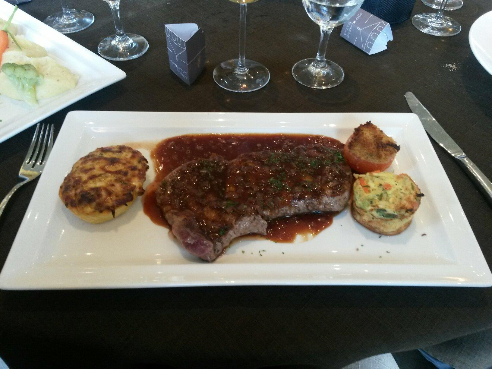
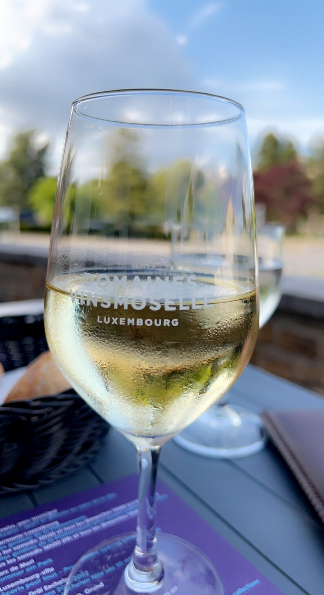

Appréciation
4,3sur 5 · TripAdvisor
Au bord de la Moselle, entre vignes et château — une maison de tradition, cuisine luxembourgeoise et française au fil des saisons.


Le nom « an der Tourelle » — « à la petite tour » — se lit d'abord dans l'architecture : une tourelle coiffée d'un toit conique, une arcade de fenêtres cintrées, et à l'intérieur une salle ronde intime dont la charpente rayonne en étoile au-dessus des convives.
Reprise en 2006 par Jean-Marie Hemmen, la maison marie tradition et modernité : un accueil chaleureux et sans hâte, des portions généreuses, et une vue sur la Moselle, le château et son parc. Le cadre est une destination en soi autant que la cuisine.
Sélection d'après les avis et les fiches de l'établissement. Carte et prix susceptibles d'évoluer — prix à confirmer avec la maison.
Des assiettes soignées et généreuses, un dressage précis, et une cave qui fait la part belle aux blancs et crémants de la Moselle luxembourgeoise — à deux pas des coteaux qui les font naître.


